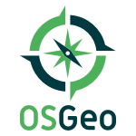

La Fundación OSGeo¶
Empoderar a todos por medio de código geoespacial abierto
La Fundación de Código Abierto Geoespacioal (OSGeo) es una organización sin fines de lucro cuya misión es fomentar la adopción global de tecnología geoespacial abierta al ser una fundación de software inclusivo dedicada a una filosofía abierta y al desarrollo participativo impulsado por la comunidad.
Las actividades de difusión de OSGeo incluyen:
Capítulos Locales: Los grupos locales, regionales y de idiomas apoyan las actividades de base.
GeoForAll: Más de 100 laboratorios educativos de todo el mundo que trabajan con socios para hacer que la educación geoespacial y las oportunidades sean accesibles para todos.
OSGeoLive: Una distribución de software de código abierto geoespacial establecido, preconfigurado con datos de muestra y de inicio rápido, listo para probar.
FOSS4G: Conferencia anual e internacional para Software Libre y de Código Abierto Geoespacial, así como muchos programas regionales y eventos locales.